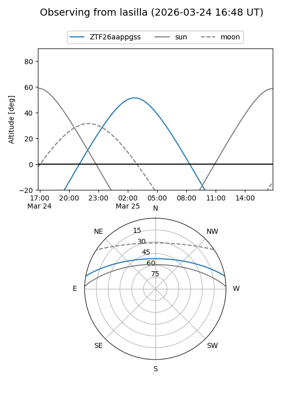
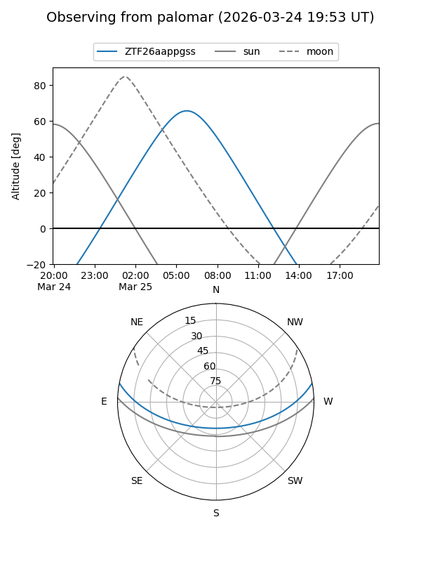

ZTF26aappgss
Target ZTF26aappgss at 2026-03-25 08:08
Aliases and brokers:
FINK: link
Lasair: link
ALeRCE: link
alt names
ZTF26aappgss (ztf,fink_ztf)
Coordinates:
equatorial (ra, dec) = 151.9317,+9.25961
equatorial (HMS+DMS) = 10:07:43.61,+09:15:34.58
galactic (l, b) = (229.8622,+47.47882)
Flags:
Photometry:
last ztfg=19.85
1 ztfg detections
Lightcurve
Visibility


Additional plots